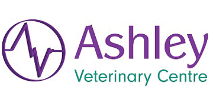

-
Veterinary Surgeon
Premium job
- Caister-on-Sea, Great Yarmouth
- Up to £45,000 per annum + benefits
Small animal Veterinary Surgeon Caister Vets, Norfolk Independently owned purpose built practice Due to further expansion we are looking for an ...
- Recruiter: Caister Vets Ltd
-
Senior Lecturer in Equine Surgery - Grade 9
Premium job
- Wirral, Merseyside
- £52,132 - £64,080 pa
The post has 6 weeks holiday entitlement, OOH supplement, CPD package and generous employer pension contribution.
- Recruiter: University of Liverpool
-
Senior Lecturer in Equine Surgery - Grade 9
Premium job
- Wirrall, Merseyside
- £52,132 - £64,080 pa
The post has 6 weeks holiday entitlement, OOH supplement, CPD package and generous employer pension contribution.
- Recruiter: University of Liverpool
-
Veterinary Surgical Associate
- Surgical referral practice Leeds LS10
- £50,000 pa, bonus, health insurance, 5%pension,generous cpd, 8 weeks holiday
Ideal opportunity to advance surgical skills working with a European and RCVS Specialist surgeon, providing emergency care to surrounding practices.
- Recruiter: Frank Pet Surgeons
-
Veterinary Surgeon
Premium job
- Glasgow West End near Glasgow Vet School
- Competitive salary dependent on experience
An exciting opportunity to be part of a dynamic, ambitious, friendly & energetic team in the West End of Glasgow.
- Recruiter: ASHLEY VETERINARY CENTRE